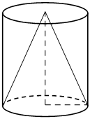

Авторский разбор и аудит предварительны; внешней экспертизы нет.
Модель автора: claude-opus-5-5 (opus; effort=low); в основных частотах: True ·
Впишите правильный ответ.
| Цилиндр и конус имеют общие основание |  |
КЭС: 7.4 Тела и поверхности вращения
27
| ID / вход | Действие | Результат | Локальные KC |
|---|---|---|---|
| s1 · condition | Сопоставить формулы объёмов: V_цил = S·h, V_кон = (1/3)·S·h при общих основании S и высоте h, откуда V_цил = 3·V_кон | V_цил = 3·V_кон | kc1 |
| s2 · condition, s1 | Подставить объём конуса в полученное соотношение | V_цил = 3·9 = 27 | kc2 |
[
{
"id": "m1",
"name": "Сравнение формул объёмов тел с общими основанием и высотой",
"step_ids": [
"s1",
"s2"
]
}
]Вход: цилиндр и конус с общей площадью основания и общей высотой. Операция: сравнить формулы V=S·h и V=(1/3)·S·h и получить, что объём цилиндра втрое больше объёма конуса. Граница: только при совпадении основания и высоты.
{
"local_kc_id": "kc1",
"status": "new_candidate",
"catalog_kc_id": null,
"evidence": [
{
"ref": "step:s1:action",
"quote": "V_цил = S·h, V_кон = (1/3)·S·h при общих основании S и высоте h, откуда V_цил = 3·V_кон"
},
{
"ref": "image:assets/dad851d338ec7ac4d4a64cfd.png",
"region_description": "Конус вписан в цилиндр: основание конуса совпадает с нижним основанием цилиндра, вершина в центре верхнего основания, пунктиром показаны высота и радиус"
}
],
"context_refs": [
"condition"
],
"alternatives_checked": [
{
"catalog_kc_id": "pyramid_volume",
"reason": "Формула объёма пирамиды V=S h/3, не конуса и не сравнение с цилиндром"
},
{
"catalog_kc_id": "literal_19971b364ca1",
"reason": "Объём призмы S·h; цилиндр не призма, и узел не включает сравнение объёмов"
},
{
"catalog_kc_id": "similar_area",
"reason": "Отношение площадей подобных фигур, тела здесь не подобны"
}
],
"rationale": "Действие: сравнить формулы объёмов цилиндра и конуса при общих основании и высоте и получить отношение 3:1. В каталоге нет узлов объёма цилиндра или конуса и сравнения объёмов тел с общими S и h.",
"proposal": {
"definition": "Для цилиндра и конуса (или призмы и пирамиды) с общими основанием и высотой использовать V=S·h и V=S·h/3 и получить отношение объёмов 3:1; граница — совпадение основания и высоты."
},
"blocking": false,
"issue_ids": []
}Вход: числовое отношение двух величин и значение одной из них. Операция: найти вторую величину умножением или делением. Граница: отношение уже установлено.
{
"local_kc_id": "kc2",
"status": "uncertain",
"catalog_kc_id": null,
"evidence": [
{
"ref": "step:s2:result",
"quote": "V_цил = 3·9 = 27"
}
],
"context_refs": [
"condition",
"step:s1:result"
],
"alternatives_checked": [
{
"catalog_kc_id": "physical_formula_substitution",
"reason": "Подстановка в заданную формулу близка, но узел ориентирован на прикладные/физические формулы с согласованием единиц"
},
{
"catalog_kc_id": "literal_6308771d01a6",
"reason": "Вычисление значения функции по формуле — частично подходит, но объект здесь отношение величин, а не функция"
}
],
"rationale": "Наблюдается однократное умножение 3·9 по установленному отношению. Это тривиальная арифметика; по инструкции её не следует дробить в отдельный KC. Близкие узлы перекрываются частично, однозначного соответствия нет; вероятно, действие лучше считать завершением kc1.",
"proposal": null,
"blocking": false,
"issue_ids": [
"i1"
]
}[]
[
{
"id": "i1",
"kind": "boundary",
"refs": [
"step:s2:action"
],
"description": "kc2 выделяет тривиальное умножение на известное отношение как отдельный KC; это может быть избыточной атомизацией арифметики. Ответ 27 математически верен.",
"blocking": false,
"affected_local_kc_ids": [
"kc2"
]
}
]{
"author_path": "data/annotation/runs/2026-11-09-fipi-team-bogdan108-next-100/raw/author/C59282.json",
"auditor_path": "data/annotation/runs/2026-11-09-fipi-team-bogdan108-next-100/raw/auditor/C59282.json",
"accepted_after_review": null
}